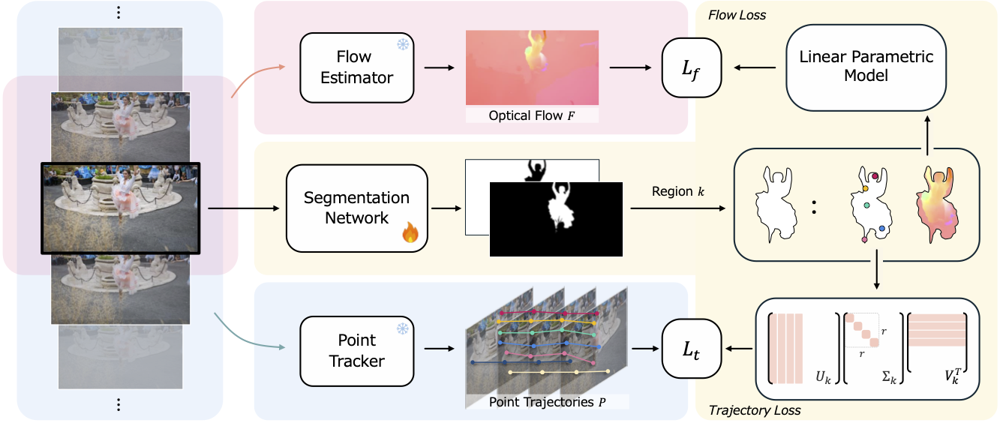
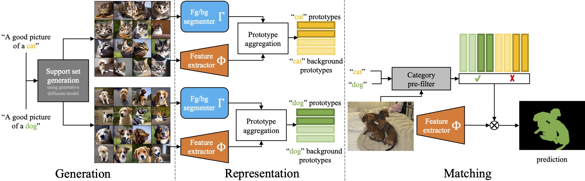
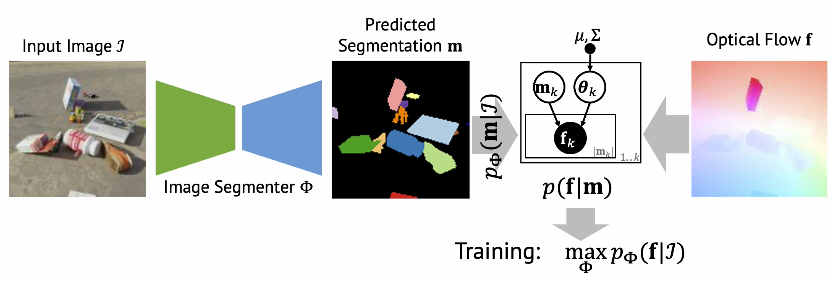
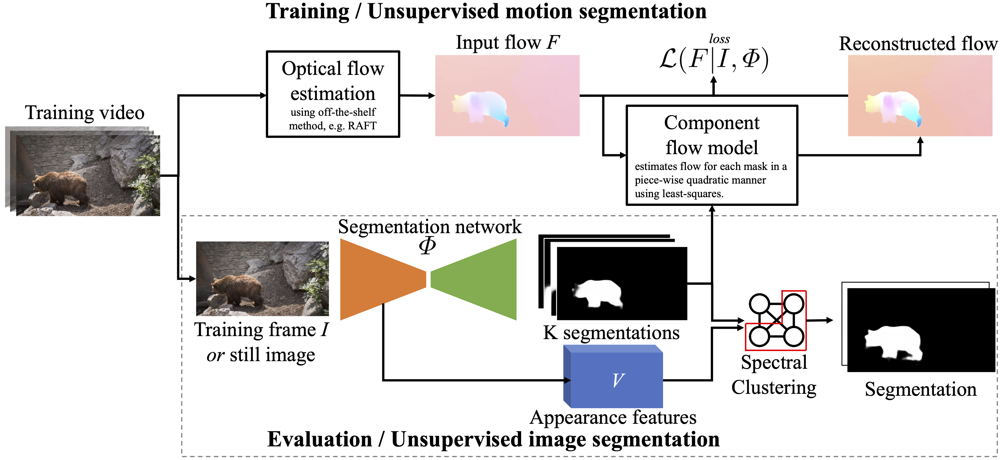

I am currently a final-year PhD student at VGG, University of Oxford, advised by Prof A. Vedaldi, Prof C. Rupprecht, and Dr I. Laina. My PhD is funded through AIMS CDT. This summer I interned with Meta Reality Labs Spatial AI Systems team.
In previous life, I worked as MLE for OakNorth and Bloomberg. I graduated with MEng in Computer Science from University of Cambridge, supervised by Prof Liò.
I am always happy to discuss research, so feel free to reach out!
Research
I'm interested in computer vision, deep learning, generative AI, and unsupervised methods and broadly how to learn about objects that comprise the world.
Learning segmentation from point trajectories
Neural Information Processing Systems (NeurIPS) 2024 Spotlight
We consider the problem of segmenting objects in videos based on their motion and no other forms of supervision. Prior work has often... [Read more]

Diffusion Models for Open-Vocabulary Segmentation
European Conference on Computer Vision (ECCV) 2024 Oral
Open-vocabulary segmentation is the task of segmenting anything that can be named in an image. Recently, large-scale vision-language... [Read more]

Unsupervised Multi-object Segmentation by Predicting Probable Motion Patterns
Neural Information Processing Systems (NeurIPS) 2022
We propose a new approach to learn to segment multiple image objects without manual supervision. The method can extract objects form... [Read more]

Guess What Moves: Unsupervised Video and Image Segmentation by Anticipating Motion
British Machine Vision Conference (BMVC) 2022Spotlight
Motion, measured via optical flow, provides a powerful cue to discover and learn objects in images and videos. However, compared to... [Read more]

ClevrTex: A Texture-Rich Benchmark for Unsupervised Multi-Object Segmentation
Neural Information Processing Systems Track on Datasets and Benchmarks (NeurIPS) 2021
There has been a recent surge in methods that aim to decompose and segment scenes into multiple objects in an unsupervised manner... [Read more]

Services
- Reviewer: CVPR, ICCV, ECCV, 3DV, NeurIPS (top reviewer), ICLR, IJCV.
-
Talks:
- "Unsupervised Object Learning", Aug 2024, Meta Surreal, Redmond, WA
- "Segmenting Objects without Manual Supervision", Jan 2024, CVG, University of Bern
-
Teaching Assistant:
- Computer Vision, AIMS, University of Oxford, 2023
- Multi View Geometry, AIMS, University of Oxford, 2022
- OOP & Functional Programming, University of Cambridge, 2016